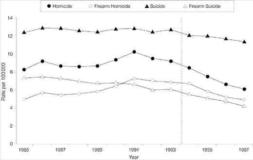

FIREARMS AND FEDERAL LAW: THE FIREARMS OWNERS' PROTECTION ACT of 1986
A Revision to the Gun Control Act...
Eased Restrictions on gun sellers while increasing penalties on felons who illegally shop for guns

The Firearms Owners' Protection Act(FOPA) was introduced as a means to "restore fundamental fairness in clarity to our nation's firearms laws". Signed into Law in 1986, it overruled 6 decisions of the Supreme Court
What The Firearms Owners' Protection Act Did...
- Ended record keeping on Ammunition sales.
- "Safe passage" provision allows travel with firearms through states with strict gun control laws.
- Forbid the U.S. Government or any agency of it, from keeping any rtecords linking non-NFA firearms to their owners.
- Records of NICS check are legally required to be destroued after 24 hours.
Main Contributor
David T. Hardy
-Main Author
LAW | LAWYER | ATTORNEY
American private attorney and has practiced law since 1975. A graduate of the University of Arizona Law School, he previously served as an attorney with the U.S. Department of the Interior in Washington, D.C.